For an explanation on these charts, there's an article here
These are automatic charts. Last known good charts are at here
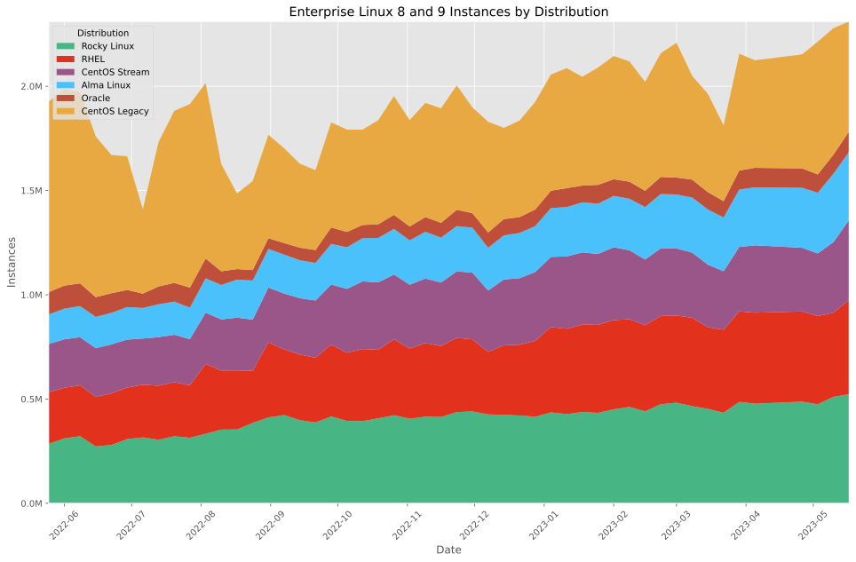 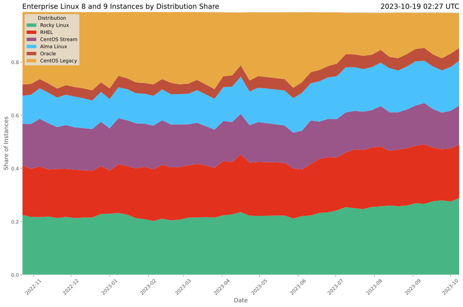 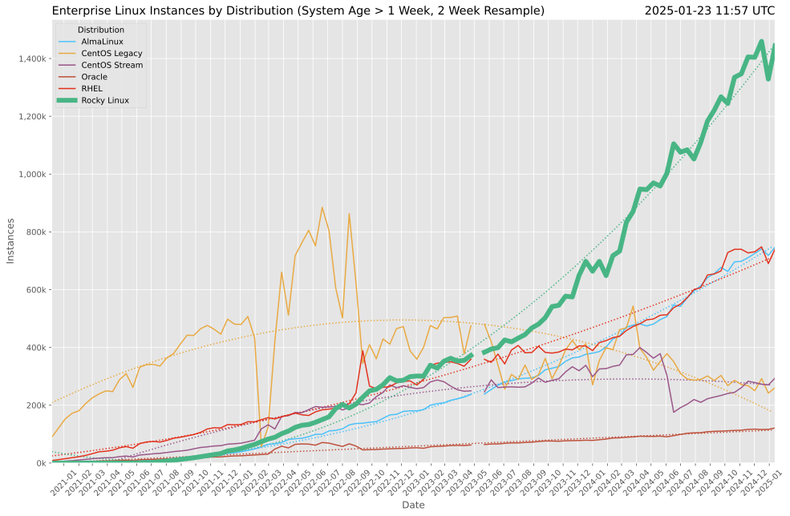 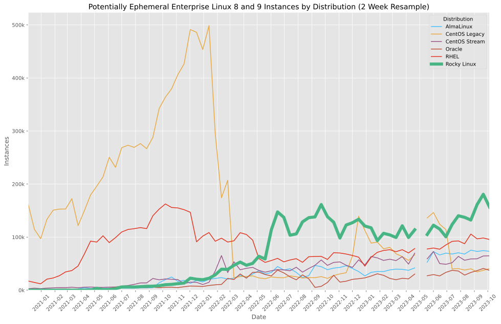 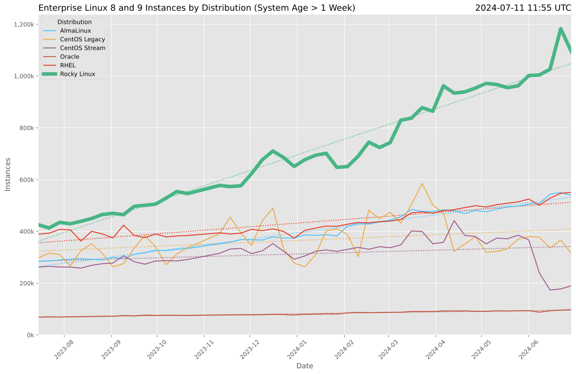 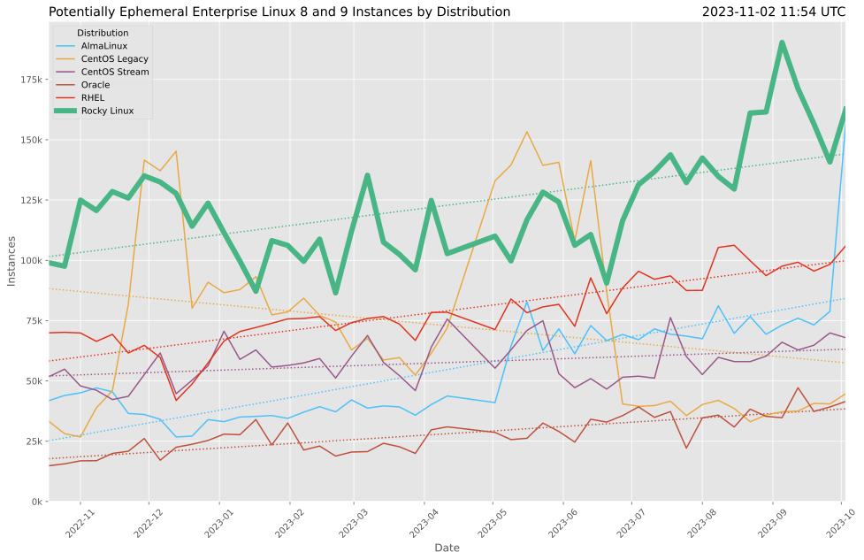 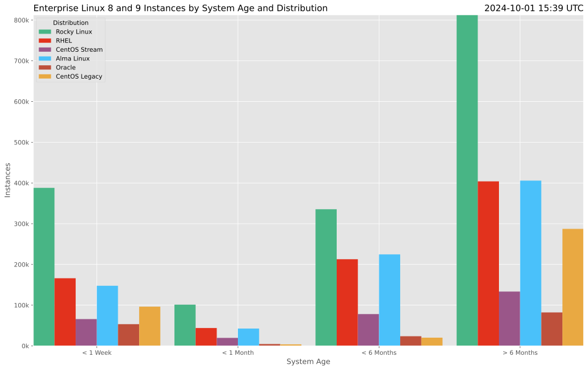 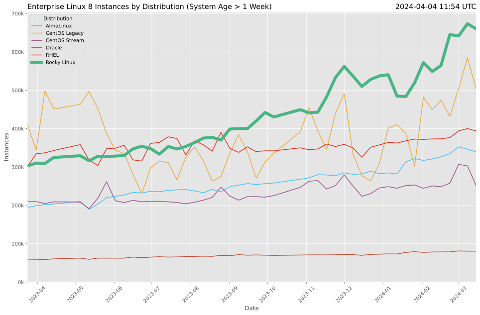 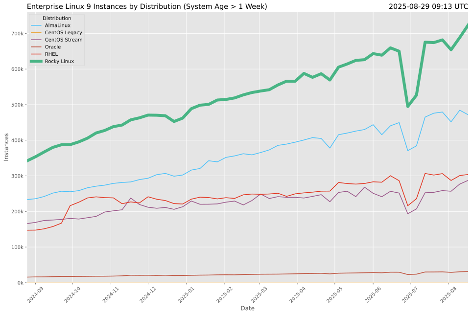 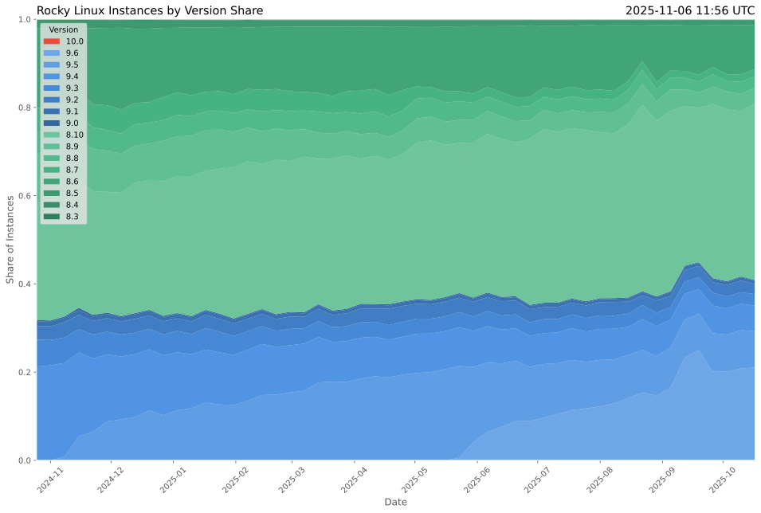
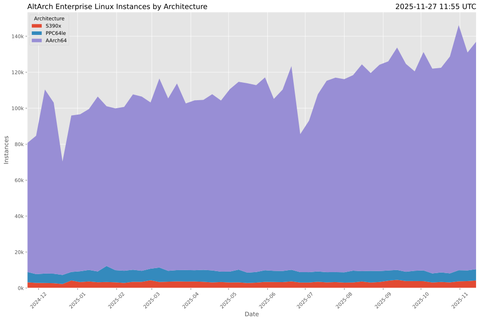
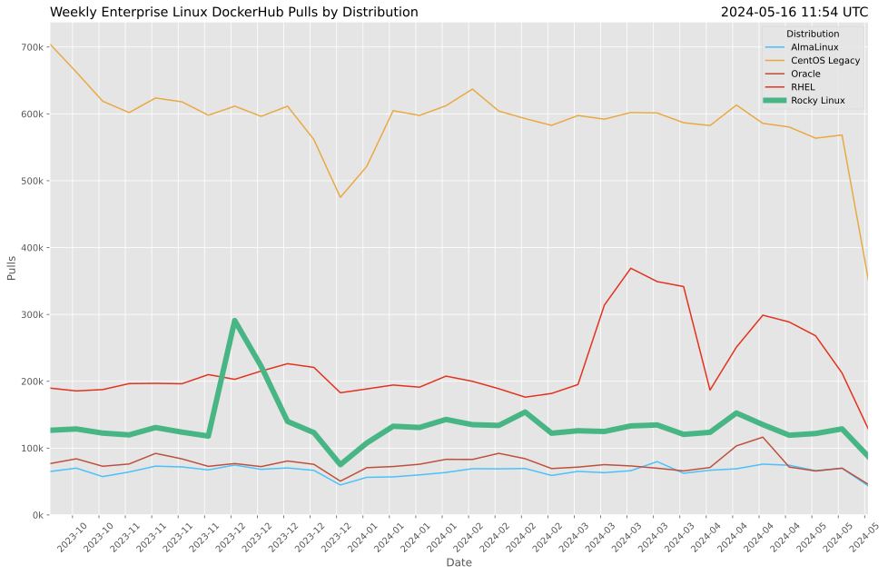
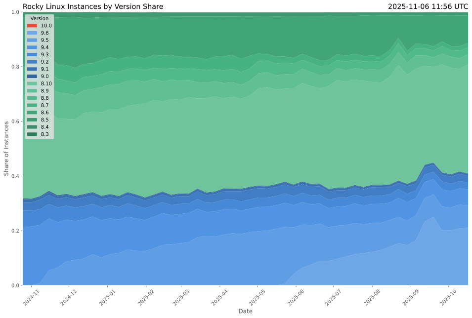
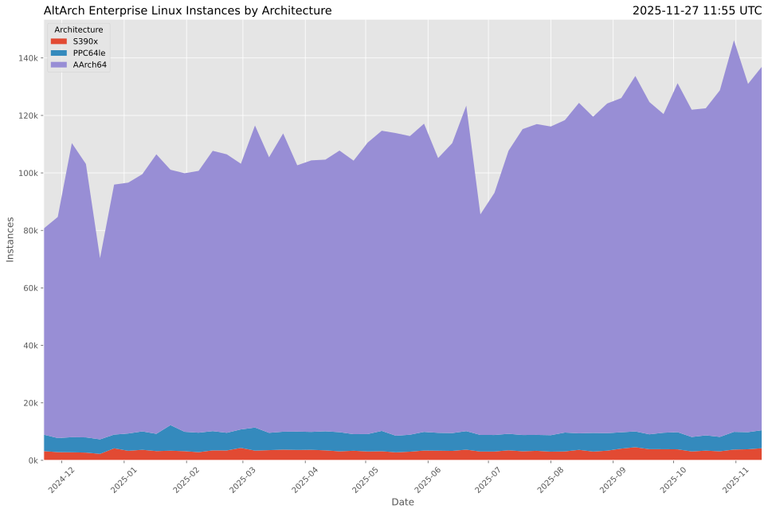
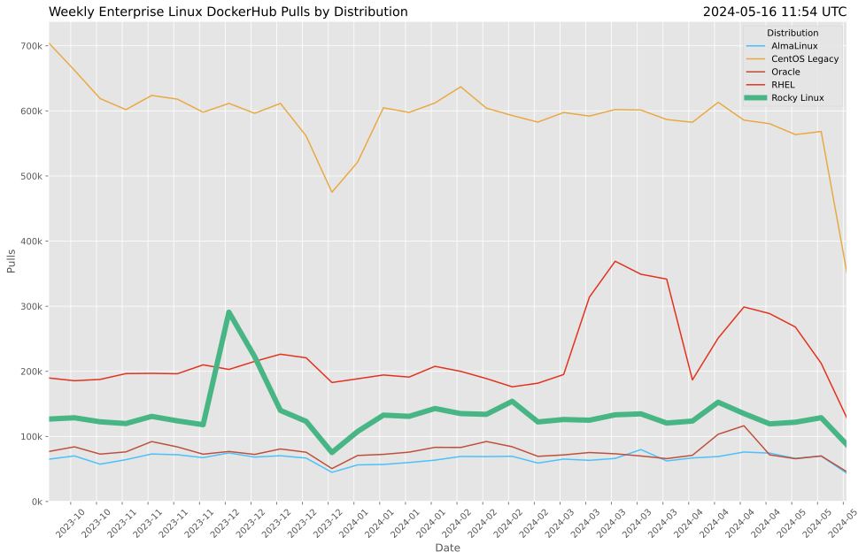
These images are licensed under a Creative Commons Attribution 4.0 International License. Feel free to share!